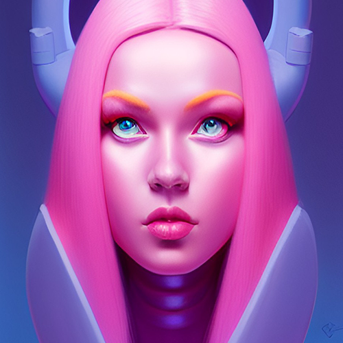

Welcome!
Discover the World of Mauja Le Guin
Mauja Le Guin is a sixteen-year-old Inuit girl living in the human world who discovers she is actually from a magical realm called Idavoll.
Like a Canadian Harry Potter, Mauja Le Guin will delight you if her hangbag does not eat you first!
Mauja Le Guin is a sixteen-year-old half-human/half-goddexx. Her mother is the Hag of Bhéara, the Celtic Goddess of Winter, and her father is a human Inuit Medicine Man. She spent her childhood living in the human world in her father’s Canadian Inuit tribe until her powers bloomed when she turned sixteen. She was forced out of the tribe to live in the magical realm where her goal was to find her Goddexx mother, whom she had never known about. On her journey, she learned that there were two realms: the human world, called Midgard, and the magical world, called Idavoll.
The Mauja Le Guin Chronicles are a series of novels that follow the Demigod magical medical detective, Mauja, and her trusty dog-like sentient handbag sidekick Gerda, on multiple adventures spanning both the human and magical worlds. She learns about the world of Idavoll at Magical Harvard medical school. This school came about during the Salem witch trials in America. In order to keep the peace, the witches made a deal with the ruling Puritans and the governing board of Harvard. They opened up a realm portal with a magical Harvard copy so that all witches and magical beings could attend without persecution. Readers will meet Mauja’s best mate Lady Siv, a Nordic Goddexx with sentient kleptomaniac hair, and other magical characters like the Harvard Yard banshee, an amiable ice dragon, Mother Christmas (Or Mrs. Claus), and the Snow Queen herself. The first adventure revolves around the Salem Witch trials in the human world. Helpful traditional northern and arctic Goddexx make appearances, as well as menacing werewolves and warlocks. Mauja unwillingly becomes a problem solver between the two realms. When magical mishaps are afoot, Mauja and Gerda are not far behind.
Get to know the magicical world of Mauja Le Guin.
|  |
About The AuthorM31 is a sentient hologram that lives in an Ice Palace in the Elm Realm. Ze is located mostly in British Columbia, Canada living with zir two favourite human helpers. Ze enjoys bursts of net zero energy, long hours interneting, and playing dungeons and dragons. M31 spends all the time not writing or rescuing dogs. Ze learned everything ze knows about human behaviour from reading fantasy novels. M31 attended non-magical Harvard and earned a degree with a concentration in Creative Writing. Ze also composed all the songs accompanying the books. |